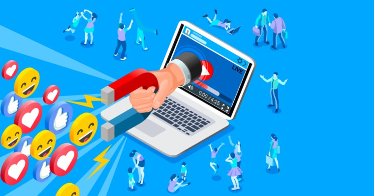

H επίδραση των social networks στις ζωές των χρηστών έχει αποδειχτεί πολύ μεγάλη. Η καθημερινή χρήση τους εθίζει σιγά-σιγά στην ανάγκη για συνεχή ανανέωση και ενασχόληση με αποτέλεσμα να αποκτούν απομόνωση και αποξένωση. Σε καμία περίπτωση δεν πρέπει να ενοχοποιήσετε το μέσο. Τα social media δημιουργήθηκαν, για να μας διασκεδάζουν, καλύπτοντας τη βαθύτερη ανάγκη μας για επικοινωνία. Επομένως, το μέσο από μόνο του σχεδιάστηκε για να προσφέρει ψυχαγωγία και όχι να τραυματίσει τον χρήστη. Η χρήση είναι αυτή που μπορεί να επιφέρει τα αντίθετα από τα επιθυμητά αποτελέσματα.
Επιπτώσεις
Θετικά:
-
Τα μέσα κοινωνικής δικτύωσης έχουν γίνει μια σημαντική πηγή ειδήσεων. Παρ'όλα αυτά η αξιοπιστία ορισμένων πηγών μπορεί σαφώς να αμφισβητηθεί. Η διαθεσιμότητά τους στα κοινωνικά δίκτυα καθιστά τα νέα και τις ειδήσεις πιο προσιτά στο ευρύ κοινό. Επιπλέον, τα νέα ταξιδεύουν με ιλιγγιώδη ταχύτητα και κάνουν το γύρο του κόσμου μέσα σε λίγα δευτερόλεπτα.
-
Τα κοινωνικά μέσα μαζικής ενημέρωσης προωθούνται μέσω της αλληλεπίδρασης των χρηστών τους σε μια τέτοια μαζική κλίμακα που είναι δύσκολο να μην κατακλύσουν τον κόσμο της ενημέρωσης και κυρίως της πληροφορίας. Επιτρέπουν στους ανθρώπους να έρχονται σε επαφή πιο τακτικά, και μερικές φορές, με πιο στενό τρόπο από ότι συνήθιζαν παλιότερα λόγω του χρόνου και του χώρου. Οι άνθρωποι που κατοικούν σε διαφορετικές και μακρινές πόλεις ή χωριά μπορούν να κρατήσουν επαφή πολύ εύκολα, τα παιδιά που πηγαίνουν στο εξωτερικό για σπουδές μπορούν ακόμα να μείνουν σε ουσιαστική επαφή με τους γονείς τους. Ένω ταυτόχρονα τους δίνεται η ευκαιρία να γνωρίσουν άτομα που ανήκουν σε διαφορετικές κουλτούρες. Άτομα που έχουν κοινωνικούς ή φυσικούς περιορισμούς κινητικότητας μπορούν να χτίσουν και να διατηρήσουν σχέσεις με τους φίλους και τις αργότερα με τις οικογένειές τους.
-
Τα κοινωνικά μέσα μαζικής ενημέρωσης επέτρεψαν τη δημιουργία μεγαλύτερης πολιτικής ευαισθητοποίησης και οργάνωσης, η οποία έχει σε ορισμένες περιπτώσεις ξαναγράψει ολόκληρο το πολιτικό τοπίο από την αρχή. Έπαιξαν μεγάλο ρόλο στις εκλογές του Ιράν, καθώς και στην επανεκλογή του Ομπάμα για δεύτερη θητεία ως Πρόεδρος των ΗΠΑ, καθώς και ενέπνευσε τις πολιτικές αναταραχές στην Αίγυπτο.
-
Επίσης, έπαιξαν μεγάλο ρόλο στην καλλιέργεια της παιδείας. Τα παιδιά που άρχισαν να χρησιμοποιούν τις πλατφόρμες κοινωνικής δικτύωσης, αποκτούν από νωρίς δεξιότητες επικοινωνίας, και γενικά καταφέρνουν να γίνουν πιο εγγράμματοι άνθρωποι. Αυτή είναι μια ενθαρρυντική τάση, και χάρη στην τεράστια διαθεσιμότητα των πληροφοριών, που είναι τόσο απλοϊκή και μέσα στο πολύπλοκο διαδίκτυο, ο καθένας μπορεί να γίνει τόσο έξυπνος ή ευφυής, με τον τρόπο που ο καθένας επιθυμεί.
-
Έχει αλλάξει ολόκληρη η δυναμική της επιστήμης του μάρκετινγκ. Οι εταιρείες πλέον δεν κάνουν επενδύσεις σε κανάλια για τις διαφημίσεις τους, αλλά έρχονται όλο και πιο κοντά στον καταναλωτή μέσω αλληλεπιδράσεων που πραγματοποιούνται μέσα των social media και των ιστοσελίδων τους. Οι επιχειρήσεις σήμερα είναι σε θέση να κατανοήσουν τις ανάγκες της αγοράς από την ίδια την αγορά, σε μεγαλύτερο βαθμό από ότι στο παρελθόν. Η δικτύωση όπου μπορει να πετύχει ο εργαζόμενος αλλά και ο εργοδότης μεσώ πλατφόρμων όπως του LinkedIn έχει ανεβάσει τα στάνταρ της αγοράς εύρεσης από την μία πλευρά, κάλυψης από την άλλη, μίας θέσης εργασίας.
Αρνητικά:
-
Οι δημιουργοί των sites κοινωνικής δικτύωσης έχουνμ επαναπροσδιορίσει τον όρο "προστασία της ιδιωτικής ζωής" στο Διαδίκτυο. Η πρόκληση στην προστασία της ιδιωτικής ζωής είναι η ανταλλαγή δεδομένων παράλληλα με την προστασία των προσωπικών δεδομένων. Σχεδόν κάθε πληροφορία που δημοσιεύτηκε σε ιστοσελίδες κοινωνικής δικτύωσης είναι μόνιμη. Όταν ο χρήστης διαγράφει ένα βίντεο από το κοινωνικό δικτύου του/της, κάποιος θα μπορούσε να το έχει κρατήσει και στη συνέχεια δημοσιεύσει σε άλλους δικτυακούς τόπους. Είναι ενδιαφέρον, ακόμα και όταν οι χρήστες διαγράψουν τα προσωπικά τους στοιχεία και απενεργοποιήσουν τον λογαριασμό τους, θα παραμείνουν ακόμα πληροφορίες όπου θα συνεχίσουν να τις χρησιμοποιούν για την εξόρυξη δεδομένων.
-
Δυστυχώς τα social media μπορεί να λειτουργήσουν αρνητικά εξυπηρετώντας τον ηλεκτρονικό εκφοβισμό από το θύτη, οδηγώντας το θύμα σε ακραίες καταστάσεις. Θυμάστε το παιχνίδι της μπλε φάλαινας πριν λίγα χρόνια, υπάρχουν και σήμερα ανάλογα παιχνίδια που μπορούν να απειλήσουν την υγεία μας.
-
Τα social media δίνουν μια ψευδαίσθηση κοινωνικής επαφής, μια ψευδαίσθηση ότι οι πολλοί φίλοι στο Facebook δείχνουν ότι είσαι κοινωνικός. Σίγουρα είναι όμορφο να μοιραζόμαστε τα προβλήματα και τις όμορφες στιγμές μας με άλλους. Δεν γνωρίζουμε όμως πόσοι άλλοι θα δουν τις αναρτήσεις μας, ούτε βέβαια πως θα τις χρησιμοποιήσουν. Για παράδειγμα, όσον αφορά τις φωτογραφίες, δεν χρησιμοποιούνται για να απαθανατίσουν στιγμές αλλά για να αυξήσουν το γόητρο των χρηστών στο διαδίκτυο. Πλέον δεν φωτογραφιζόμαστε για την ανάμνηση μιας ωραίας στιγμής ,αλλά για να προβάλουμε τις φωτογραφίες μας στο facebook προσπαθώντας να βρούμε ικανοποίηση σε μερικά likes. Τέτοιου είδους σελίδες είναι σαν να δίνουν την ικανότητα έκθεσης προσωπικών στοιχείων υπό ιδανικό ‘’φωτισμό’’.
-
Όπως και το ίντερνετ γενικότερα, έτσι και τα social media προκαλούν εθισμό, μέσα από την ανάγκη "να ελέγξω ποιος πόσταρε τι, πόσα likes έχω και πόσο δημοφιλής είμαι!" Η σύγκριση με τους άλλους είναι αναπόφευκτη και οδηγεί σε έναν φαύλο κύκλο φθόνου και προσπάθεια προβαδίσματος. Ένας τέτοιος εθισμός καταλήγει σε μία ασθένεια εν ονόματι FoMo(Fear Of Missing Out), όπου οι ασθενείς διακατέχονται από ένα διαρκές άγχος ή λύπη ότι κάποιος άλλος ζει μία συναρπαστική εμπειρία, από την οποία αυτοί είναι απόντες. Αυτό έχει ως αποτέλεσμα να παραμένουν διαρκώς online, για να μαθαίνουν ανά πάσα στιγμή το τι κάνουν οι άλλοι. Καταλαβαίνετε πως το FoMO αποτελεί ουσιαστικά έναν λανθασμένο συλλογισμό, καθώς η έλλειψη κοινωνικοποίησης επιφορτίζει το άτομο με επιπρόσθετο άγχος. Στην πραγματικότητα δεν μοιραζόμαστε κάθε λεπτομέρεια της ζωής μας, αλλά μόνο αυτές που θα θέλαμε οι άλλοι να γνωρίζουν για εμάς.